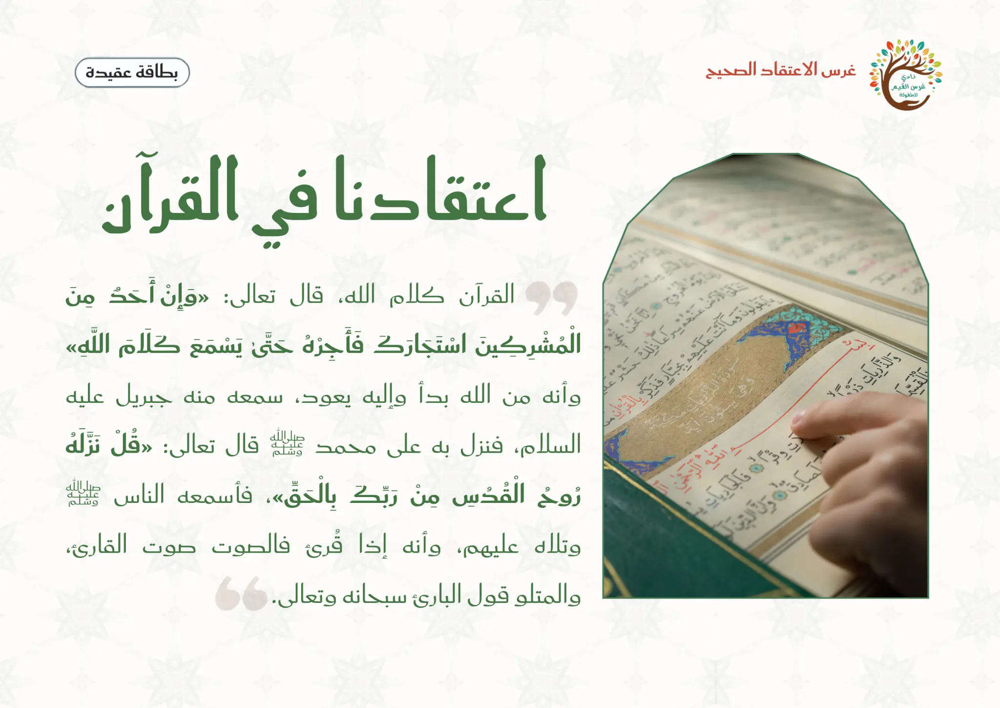
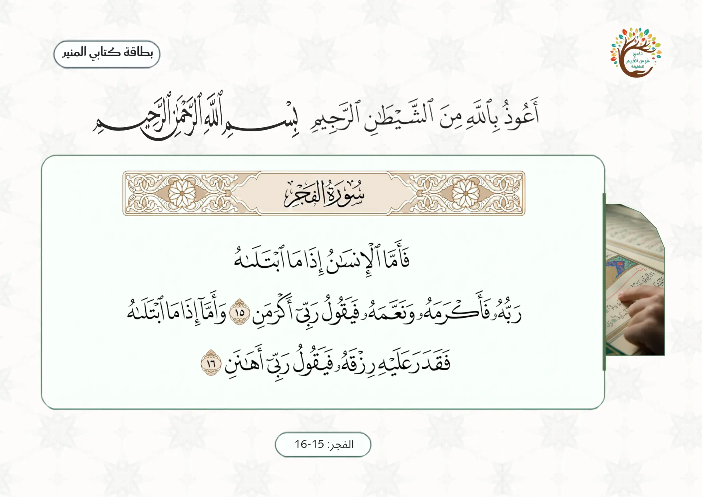

محورُ اللقاء: بعد أقسامٍ عظيمة وذكرِ الأمم المكذّبة (عادٍ وثمودَ وفرعون) وأنّ ربّك ﴿لَبِالْمِرْصَادِ﴾، تصحّحُ السورةُ فهمَ الإنسان: الغِنى والفقرُ كلاهما ابتلاءٌ لا إكرامٌ ولا إهانةٌ بذاته.
تفسيرُ الابتلاء: في ﴿فَأَمَّا الْإِنسَانُ إِذَا مَا ابْتَلَاهُ رَبُّهُ فَأَكْرَمَهُ وَنَعَّمَهُ فَيَقُولُ رَبِّي أَكْرَمَنِ﴾: «يخبر تعالى عن طبيعة الإنسان من حيث هو، وأنه جاهل ظالم لا علم له بالعواقب، يظن الحالة التي تقع فيه تستمر ولا تزول، ويظن أن إكرام الله في الدنيا وإنعامه عليه يدل على كرامته وقربه منه.» وفي ﴿وَأَمَّا إِذَا مَا ابْتَلَاهُ فَقَدَرَ عَلَيْهِ رِزْقَهُ فَيَقُولُ رَبِّي أَهَانَنِ﴾: «وأنه إذا قدر ﴿عَلَيْهِ رِزْقَهُ﴾؛ أي: ضيقه، فصار بقدر قوته لا يفضل عنه؛ أن هذا إهانة من الله له.»المصدر: تيسير الكريم الرحمن — السعدي، عبر الباحث القرآني (tafsir.app).
ثمرةُ اللقاء: أن يعرف الطفلُ أنّ الخيرَ والضيقَ اختبارٌ من الله، فيشكرَ في الرخاء ويصبرَ في الشدّة.
إضاءةٌ تفسيريّة
معاني المفردات وكيف تُقرَّب للطفل — تُعينُ المعلمةَ ولا تُلقى كلُّها في الحلقة.
﴿وَالْفَجْرِ﴾:«فأقسم تعالى بالفجر، الذي هو آخر الليل ومقدمة النهار؛ لما في إدبار الليل وإقبال النهار من الآيات الدالة على كمال قدرة الله تعالى، وأنه تعالى هو المدبر لجميع الأمور، الذي لا تنبغي العبادة إلا له.»
﴿إِنَّ رَبَّكَ لَبِالْمِرْصَادِ﴾:«لمن يعصيه؛ يمهله قليلًا ثم يأخذه أخذ عزيز مقتدر.»المصدر: تيسير الكريم الرحمن — السعدي، عبر الباحث القرآني.
تقريبٌ للطفل: مثالٌ من حياته — نعمةٌ (هديّة) ومنعٌ (تأخيرُ شيء)؛ كلاهما اختبار: أأشكرُ وأصبر؟
الضابط: التفسيرُ للتقريب لا للاستقصاء؛ يبقى المحورُ: العطاءُ والمنعُ اختبار.
الضابط العقديّ وحدُّ ما يُقال للطفل
تصحيحُ فهم الابتلاء: البلاءُ ليس دليلَ بُغضٍ ولا العطاءُ دليلَ حبٍّ بذاته؛ الميزانُ الإيمانُ والعمل — وهذا مقصودُ السورة.
المعنى المركزي: النعمة والضيق ابتلاء من الله، وتصحيح فهم الطفل.
الاستماع والترديد: بطاقة الآيات ثم تسجيل الترديد، وترديد جماعي وفردي.
الجملة التربوية: المؤمن إذا أعطاه الله شكر، وإذا ابتلاه صبر.
③ إغلاق وتقويم ٨ د
النشاط المصاحب: بطاقات الشكر والصبر (تصنيف المواقف).
أسئلة التقويم: معنى الابتلاء · ماذا أفعل عند النعمة · ماذا أفعل عند الضيق.
دعاء كفارة المجلس وختام اللقاء.
ربط الأسرة: يستمع الطفل مع أسرته إلى سورة الفجر، ويخبرهم أن المؤمن يشكر عند النعمة ويصبر عند الضيق.
ورقةٌ مرجعية سريعة أثناء الدرس — الخطوات فقط دون الأهداف والزيادات؛ والنصّ الكامل في تبويب «دليل الدرس كامل».
تهيئة بداية اليوم
تُنفَّذ تهيئة بداية اليوم في أوّل لقاء من اليوم فقط — وهو لقاء «كتابي المنير» — ثم تنتقل المعلمة في بقيّة اللقاءات مباشرةً إلى إشارة بدء اللقاء.
التوقيت الهجري لتهيئة اليوم
جارٍ حساب التاريخ الهجري…
تاريخ اليوم الهجري بحسب تقويم المتصفح.
تسأل المعلمة: ما تاريخنا الهجري اليوم؟ ثم تذكر اليوم والشهر والسنة، وتربطه ببداية حلقة كتابي المنير. وتُعرّف الأطفال أنّ «هِجْري» نسبةً إلى هجرة النبيّ ﷺ من مكّة إلى المدينة؛ فبها بدأ المسلمون تقويمهم — ونشكرُ الله أن جعل لنا الأيّامَ والشهورَ نعرف بها أوقاتنا وعباداتنا.
سؤال اليوم: أيّ يوم هذا؟ تُنشد المعلمة مع الأطفال أنشودة أيّام الأسبوع كاملة، ثم تسأل: اليوم هو؟ — وأمس كان؟ — وغدًا سيكون بإذن الله يوم؟
أنشودة الطقس بالحركات: تُشغّل المعلمة الأنشودة ويشارك الأطفال بالإشارات والحركات المناسبة، ثم الربط بالتوحيد: من خلق الشمس؟ ومن يرسل المطر؟ ومن يدبّر الطقس؟ ثم تؤكّد: الله سبحانه وتعالى.
تقول المعلمة: نبدأ يومنا بذكر الله وشكره على نعمة القرآن الذي سنتعلّمه.
مسار بداية اللقاء
① تهيئة
إشارة بدء اللقاء — نونية القحطاني
السلام عليكم ورحمة الله وبركاته يا أحباب القرآن. نستمع الآن إلى إشارة بدء اللقاء لنعرف ماذا سيكون لقاؤنا.
منهجية الإشارة: تبدأ المعلمة بتحية الإسلام، ثم تدعو الأطفال للاستماع دون أن تُسمّي اللقاء؛ فيستمعون إلى أبيات نونية القحطاني ويتعرّفون على لقائهم بأنفسهم — فيرتبط كلّ لقاء بإشارته في أذهانهم — ثم تؤكّد المعلمة: «نعم، لقاؤنا الآن هو لقاء كتابي المنير، نتعلّم فيه القرآن»، فيتهيّؤون للجلوس والإنصات.
جواب الإشارة: «لقاؤنا كتابي المنير، نتعلم فيه كلام الله ونعظمه».
آداب لقاء القرآن
🪑 أجلس بسكينة ووقاريجلس الأطفال على شكل حلقة علم وأمامهم لوحةُ الآيات المقرَّرة.
🔔 أستمع وأنصت لكلام اللهحسن الإنصات من أدب المجلس.
🛡️ أستعيذ بالله وأبدأ بالبسملةقبل أن أبدأ القرآن.
📖 أرتّل بصوت جميل واضحأقرأ القرآن ترتيلًا.
📖 أحترم المصحف ولوحة السورة وأدوات اللقاءحسن التعامل مع كلام الله وأدوات المجلس.
الاعتقاد — اعتقادنا في القرآن الكريم
أصلٌ ثابتٌ في جميع لقاءات كتابي المنير؛ تعرض المعلمة هذه البطاقة وتقرأها عليهم، ثم يردّدونها معها.

تعرض المعلمة هذه البطاقة في كل لقاء من لقاءات كتابي المنير وتقرأها عليهم.
صوتالتسجيل الصوتي لبطاقة: اعتقادنا في القرآن
مراجعة سريعة
ما اسم السورة التي نتعلمها اليوم؟
كم عدد آيات سورة الفجر؟
ماذا نقول إذا أنعم الله علينا؟ وماذا نفعل إذا ابتلانا؟
سير اللقاء
② سير وإغلاق
تمهيد · وصف القرآن: تُذكّر المعلمة الأطفال أن للقرآن أوصافًا، ومن أوصافه أنه برهان، قال تعالى: ﴿يَا أَيُّهَا النَّاسُ قَدْ جَاءَكُمْ بُرْهَانٌ مِنْ رَبِّكُمْ وَأَنْزَلْنَا إِلَيْكُمْ نُورًا مُبِينًا﴾ النساء: 174 — أي أنّ هذا القرآن بيّن لنا الله فيه الحقّ ووضّحه، ليهدينا به إلى الصراط المستقيم والوصولِ إلى جنّات النعيم؛ وهو هذا القرآن العظيم الذي اشتمل على علوم الأوّلين والآخِرين والأخبارِ الصادقةِ النافعة، والأمرِ بكلِّ عدلٍ وإحسانٍ وخير، والنهيِ عن كلِّ ظلمٍ وشرّ، فالناسُ في ظلمةٍ إن لم يستضيئوا بأنواره، وفي شقاءٍ عظيمٍ إن لم يقتبسوا من خيره.
المرحلة الأولى — البناء · الآيات المستهدفة: تعرض المعلمة الآيتين: ﴿فَأَمَّا الْإِنسَانُ إِذَا مَا ابْتَلَاهُ رَبُّهُ فَأَكْرَمَهُ وَنَعَّمَهُ فَيَقُولُ رَبِّي أَكْرَمَنِ وَأَمَّا إِذَا مَا ابْتَلَاهُ فَقَدَرَ عَلَيْهِ رِزْقَهُ فَيَقُولُ رَبِّي أَهَانَنِ﴾ (الفجر: ١٥–١٦).
مراجعة السورة: تراجع المعلمة علوم سورة الفجر: اسمها، وعدد آياتها، وتنزيلها، ثم تراجع الألفاظ المتكررة والمتشابهة وما سبق من معاني السورة.
المعنى المركزي: تخبر المعلمة الأطفال أن الله يعلّمنا في هاتين الآيتين أن الإنسان يُبتلى بالخير والشر؛ فالنعمة اختبار، والضيق اختبار.
تصحيح فهم الطفل: ليس معنى أن الله أعطاني أنني أفضل من غيري، وليس معنى أن الله ضيّق عليّ أنه أهانني. المؤمن يسأل نفسه: ماذا يريد الله مني الآن؟ إن أعطاني شكر، وإن ضيّق عليّ صبر.
الجملة التربوية: المؤمن إذا أعطاه الله شكر، وإذا ابتلاه صبر.
المرحلة الثانية — التلاوة والتثبيت: تعرض المعلمة بطاقة الآيات المقررة، ثم تشغّل تسجيل الترديد ليستمع الأطفال إلى النطق الصحيح، ثم يردّدون خلفها مقطعًا مقطعًا.

بطاقة الآيات المقررة (الفجر ١٥–١٦) التي تعرضها المعلمة قبل الاستماع والترديد
ترديد سورة الفجر: الآيات ١٥–١٦ (تسجيل الترديد · للاستماع والترديد فقط دون عرض الشاشة على الأطفال)
التسميع الفردي: تختار المعلمة طفلين أو ثلاثة للترديد الفردي الهادئ مع تشجيع: «الله السميع يسمعك وأنت تقرأ كلامه»، ثم تُكرّر السماع قبل الانتقال إلى التغذية الراجعة.
جملة اللقاء الختامية: «النعمة والضيق اختبار من الله؛ المؤمن يشكر عند العطاء ويصبر عند الضيق».
الهدفتثبيت معنى أن النعمة والضيق كلاهما ابتلاء من الله، وأن المؤمن يشكر عند العطاء ويصبر عند الضيق.
الأدواتبطاقة كبيرة «أعطاني الله نعمة» · بطاقة كبيرة «قدّر الله عليّ أمرًا» · بطاقات صغيرة (أشكر · أصبر · أحمد الله · أدعو الله · لا أعترض) · بطاقات مواقف مصورة.
التهيئةتجلس المعلمة الأطفال في نصف دائرة، وتضع بطاقتَي «الشكر» و«الصبر» أمامهم على اللوح أو الأرض، ثم تشرح أن كل موقف نسمعه سنضعه تحت البطاقة المناسبة.
خطوات التنفيذ
تعرض المعلمة بطاقة موقف: «أعطاني الله صحة» وتسأل: ماذا أفعل؟ ثم توجّههم إلى بطاقة «أشكر».
تعرض بطاقة: «مرضت ولم أستطع اللعب اليوم» وتسأل: ماذا أفعل؟ ثم توجّههم إلى بطاقة «أصبر وأدعو الله».
يخرج طفل، يسحب بطاقة موقف، يذكر هل هي نعمة أو ضيق، ثم يضعها تحت الشكر أو الصبر.
تقرأ المعلمة الآيتين مرة قصيرة، ثم تربط: الله يعلّمنا ألا نغترّ بالنعمة ولا نعترض عند الضيق.
يكرّر الأطفال الجملة التربوية: «المؤمن إذا أعطاه الله شكر، وإذا ابتلاه صبر».
تختار المعلمة طفلين للتسميع الهادئ أو ترديد جزء قصير من الآية بعد القارئ.
أسئلة أثناء النشاط (التغذية الراجعة)
ما معنى الابتلاء؟
إذا أعطاني الله نعمة، ماذا أفعل؟
إذا ضاق عليّ شيء، هل أعترض أم أصبر؟
اختيارات المعلمة حسب حاجة الطفل
الخجول: لا يُلزم بالتسميع الكامل؛ يختار بطاقة أو يردّد كلمة واحدة خلف المعلمة مع تعزيز هادئ.
السريع: يذكر مثالًا من حياته أو يساعد في ترتيب البطاقات أو يسأل زميله سؤالًا لطيفًا.
كثير الحركة: يُعطى دورًا محدّدًا: حامل اللوحة، أو موزّع البطاقات، أو موزّع بطاقات الآيات.
الجملة الختاميةاللهم اجعلنا من عبادك الشاكرين الصابرين.
اختيارات الأنشطة الإضافية
تلبية الاحتياجات الفرديةالبطيء: إعادة سماع الآية وتكرار البطاقة بلطف. الخجول: «جزاك الله خيرًا» عند أول اختيار. النشيط: يوزّع بطاقات المواقف ويجمعها.
التوسيع والإثراءبيتي: يستمع مع أسرته إلى سورة الفجر ويحكي معنى الشكر والصبر. فني: تزيين بطاقتَي «أشكر» و«أصبر» (بلا صور ذوات أرواح).
اقتراحات للتكرار مراجعة بطاقتَي الشكر والصبر ٣ دقائق في مطلع اللقاء التالي قبل الدرس الجديد.
كفارة المجلس · خاتمة اللقاء
سبحانك اللهم وبحمدك، أشهد أن لا إله إلا أنت، أستغفرك وأتوب إليك.
العلاقة التكاملية لهذا اللقاء
الفكرة الناظمة لليوم: من ملاحظة تعاقب الليل والنهار إلى عبادة التفكّر.
سؤال اليوم: من خلق الليل والنهار؟ وكيف يقودني تغيّرهما إلى ذكر الله؟
هذا اللقاء: كتابي المنير — سورة الفجر: الابتلاء والشكر والصبر.
كيف يتكامل هذا اللقاء مع بقية دروس اليوم والوحدة؟
التعليمُ التكامليّ = يعيشُ الطفلُ المعنى الواحد في كلّ حصص يومه؛ فلا يكون لقاءُ سورة الفجر جزيرةً منعزلة، بل خيطًا يربط القرآنَ واللغةَ والعددَ والأدبَ في تجربةٍ واحدة. وهذه جسورُ الربط العمليّة:
علّمني ربي — مفهوم الليل والنهار
كما يتفكّرُ الطفلُ تعاقبَ الليل والنهار آيةً من آيات الله، يسمعُ في الفجر أنّ العطاءَ والضيقَ ابتلاءٌ من الله؛ فكلاهما يقودُ إلى التفكّر في حكمة الخالق. حركةُ المعلمة: «كما ينظّم اللهُ الليلَ والنهار، هو الذي يقدّر العطاءَ والضيق؛ فماذا نقولُ عند كلٍّ منهما؟»
صاحبُ النعمة في الفجر ظنّ الفضلَ لنفسه؛ واسما اللهِ (الوهّاب · الغنيّ) يعلّمانِ الطفلَ أنّ كلَّ عطاءٍ من الله وحده فيشكرُه ولا يغترّ. حركةُ المعلمة: «مَن وهبنا كلَّ ما نملك؟ الوهّابُ الغنيُّ سبحانه؛ فنقولُ الحمدُ لله.»
أدب واقتداء — الأذكار
يُترجَمُ الشكرُ والصبرُ اللذانِ في الفجر إلى سلوكٍ يوميٍّ عبر أذكار الصباح والمساء. حركةُ المعلمة: «كلّما جاءتنا نعمةٌ نشكرُ اللهَ بذكرٍ؛ هيا نردّده معًا.»
الأركان والأناشيد
نشيدُ التفكّر ونشاطُ الركن يُثبّتانِ معنى الشكر بالله باللعب الحرّ. حركةُ المعلمة: ربطُ نشاطِ الركن بعبارة اليوم «سبحان الله».
فكرة للربط السريع
اسألي: كيف يخدم هذا اللقاء معنى اليوم؟ وما السلوك أو العبارة التي سيخرج بها الطفل إلى اللقاء التالي؟ يتعلّم الطفل أن النعمة والضيق ابتلاء من الله، فيشكر عند العطاء ويصبر عند الضيق.
التقويم في منهج غرس القيم ثلاثي المراحل — يرصد الطفل قبل الدرس وأثناءه وبعده.
التقويم القبلي
ما اسم السورة التي نتعلمها؟
كم عدد آيات سورة الفجر؟
ما آداب الاستماع للقرآن؟
التقويم التكويني (أثناء اللقاء)
ما معنى الابتلاء؟
كيف يكون حال المؤمن مع الابتلاء؟
كيف يكون حال الجاهل مع الابتلاء؟
ملاحظة احترام الطفل للآية أثناء النشاط
التقويم النهائي
يردّد الطفل الآيات المستهدفة خلف المعلمة.
يجيب عن سؤال واحد من معنى الآيات.
يلتزم بسكينة الاستماع والتلاوة.
المعيار: ترديد الآيتين + بيان الشكر والصبر
مؤشرات النجاح
المؤشر المعرفي
يذكر أن النعمة والضيق ابتلاء من الله، وأن المؤمن يشكر عند العطاء ويصبر عند الضيق.
المؤشر المهاري
يقرأ الآيتين خلف المعلمة، ويصنّف موقفًا مصوّرًا إلى شكر أو صبر.
المؤشر الوجداني
تعظيم كلام الله عند سماعه، والهدوء عند عدم حصوله على ما يريد.
المؤشر التطبيقي
يضع بطاقة الموقف تحت الشكر أو الصبر في النشاط بأدب.
الآداب الصفية لحظات تربوية ذهبية — تبدأ المعلمة كل فكرة بآية أو نص حديث، ولا يعلو صوتها على النص الشرعي. الحزم مع الهدوء دائمًا.
آداب المعلمة — مقدمة الرعاية
تبدأ بالبسملة والحمدلة والدعاء: «اللهم علّمنا ما ينفعنا وانفعنا بما علّمتنا».
تنطلق كل فكرة بآية أو نص حديث شريف.
الحزم مع الهدوء — فلا يعلو صوت المعلمة على النص الشرعي.
آداب الطفل مع القرآن
الجلوس بسكينة ووقار في حلقة العلم أمام لوحة الآيات.
الإنصات لكلام الله وعدم المقاطعة أثناء التلاوة.
الاستعاذة والبسملة قبل القراءة، وحسن التعامل مع المصحف.
١ · تعظيم كلام الله
الموقفوضع طفل بطاقة النشاط فوق صفحة المصحف المفتوح.
الرد المقترح«المصحف كلام الله نعظّمه ولا نضع فوقه شيئًا. نرفع بطاقتنا برفق، ونضع المصحف في مكانٍ عالٍ نظيف».
القيمةتعظيم القرآن — حسن التعامل مع المصحف.
ربط بالدرس: معاني الشكر والصبر مدخل لتعظيم كلام الله لا لعبة تصنيف فوق المصحف.
٢ · حسن الاستماع والإنصات
الموقفتحدّث طفل مع زميله أثناء تلاوة الآيتين.
الرد المقترح«إذا سمعنا القرآن أنصتنا؛ قال الله: ﴿فَاسْتَمِعُوا لَهُ وَأَنْصِتُوا﴾. نستمع بقلوبنا لكلام ربّنا. جزاك الله خيرًا».
القيمةحسن الاستماع — الإنصات لكلام الله.
ربط بالدرس: نتعلّم الآيتين استماعًا وترديدًا من تسجيل الترديد.
٣ · الاستعاذة والبسملة قبل القراءة
الموقفبدأ طفل يردّد الآية دون استعاذة ولا بسملة.
الرد المقترح«قبل أن نقرأ القرآن نستعيذ بالله ونبسمل؛ فنبدأ باسم الله ونطلب حفظه. هيا نقولها معًا برفق».
القيمةأدب تلاوة القرآن — الاستعانة بالله.
ربط بالدرس: من آداب لقاء القرآن التي رددناها في بدء اللقاء.
٤ · السكينة والوقار في الجلوس
الموقفتحرّك طفل كثيرًا وهو في حلقة القرآن.
الرد المقترح«في حلقة القرآن نجلس بسكينة ووقار احترامًا لكلام الله. اجلس هادئًا يا بطل، وستضع بطاقتك بعد قليل».
القيمةالسكينة — الوقار — احترام مجلس القرآن.
ربط بالدرس: أول آداب اللقاء «أجلس بسكينة ووقار».
٥ · الانتظار وضبط النفس في النشاط
الموقفأراد طفل أن يضع كل البطاقات قبل أن يأتي دوره.
الرد المقترح«انتظر دورك يا بطل، لكلٍّ منّا بطاقة يضعها تحت الشكر أو الصبر. حسن الانتظار من أدب المجلس. جزاك الله خيرًا».
القيمةضبط النفس — أدب الدور — احترام المجموعة.
ربط بالدرس: نشاط بطاقات الشكر والصبر يتناوب فيه الأطفال.
القيمة تترسّخ حين تُعاش في البيت كما تُتعلَّم في الفصل — هذه التهيئات يُطبّقها ولي الأمر قبل الدرس وبعده.
١ · تهيئة وجدانية
أيُحدّث ولي الأمر طفله عن حبّ القرآن وتعظيمه، ويذكّره أنه كلام الله.
بيقول له عند نعمةٍ يفرح بها: «الحمد لله»، وعند شيء يحزنه: «نصبر ونسأل الله العون».
← يربط الطفل بين معنى الشكر والصبر وحياته الفعلية.
٢ · تهيئة معرفية
أيذكّره أننا نتعلّم من سورة الفجر أن النعمة والضيق كلاهما ابتلاء من الله.
بيسأله بلطف: «ماذا نفعل إذا أعطانا الله نعمة؟ وماذا نفعل إذا لم نحصل على ما نريد؟»
← يرسّخ المفهوم قبل سماعه في الصف.
٣ · تهيئة حسية سمعية
أيستمع الطفل مع أسرته إلى سورة الفجر من قارئ متقن.
بيلفت انتباهه إلى الآيتين ١٥–١٦ ومعنى «أكرمَنِ» و«أهانَنِ».
← يعيش الطفل المعنى واقعيًا قبل عرضه في الصف.
٤ · تهيئة عملية بسيطة
أيجهّز مع الطفل بطاقتين صغيرتين: «أشكر» و«أصبر» ليحملهما إلى الصف.
بيساعده على ترديد الجملة التربوية: «المؤمن إذا أعطاه الله شكر، وإذا ابتلاه صبر».
← مشاركة الأسرة تعطي الطفل حافزًا للمشاركة أمام زملائه.
٥ · تهيئة سلوكية
أيشجّع طفله على قول «الحمد لله» عند النعمة وعدم التفاخر بها.
بيذكّره: عند ما لا نحبّ نصبر ولا نعترض، ونسأل الله العون.
← يصبح السلوك اليومي نفسه جزءًا من الدرس.
٦ · تهيئة تعاونية أسرية
تتعاون الأسرة على تذكّر الشكر والصبر معًا؛ فيخبر الطفل أهله بما تعلّمه، ويستمعون معه إلى الآيتين، فيتعلّم أن العائلة تعينه على تعظيم القرآن والعمل به.
← يزرع التعاون الأسري ومحبة تعلّم القرآن في وجدان الطفل.
أسئلة تطرحها على طفلك
ما اسم السورة التي تعلّمناها اليوم؟
ما معنى الابتلاء؟
ماذا نفعل إذا أعطانا الله نعمة؟
ماذا نفعل إذا لم نحصل على ما نريد؟
كيف يكون حال المؤمن مع الابتلاء؟
‹
أولياء أمور الفصل
غرس القيم · دليل المعلمة
اليوم
بسم الله الرحمن الرحيم 🌿
السلام عليكم ورحمة الله وبركاته
📖 تعلّم طفلكم الكريم اليوم في مادة «كتابي المنير» من سورة الفجر (الآيتان ١٥–١٦): أن النعمة والضيق كلاهما ابتلاء من الله، وأن المؤمن يشكر عند العطاء ويصبر عند الضيق، ولا يغترّ بالنعمة ولا يعترض عند الضيق.
🏡 نشاط بيتي: استمعوا مع طفلكم إلى سورة الفجر من قارئ متقن، واسألوه: ماذا نفعل عند النعمة؟ وماذا نفعل عند الضيق؟ وقولوا معًا: «الحمد لله على كل حال».
💚 جزاكم الله خيرًا على شراككم في تربية أبنائكم — فريق نادي غرس القيم
٨:٣٠ ص
اكتب رسالة…
انسخي الرسالة وأرسليها عبر واتساب أو تيليجرام — يُنسّق الغامق *هكذا* والمائل _هكذا_ تلقائيًا عند اللصق.
القيم الأساسية للدرس
تعظيم القرآن
إجلال كلام الله وتوقيره؛ فتُعرض الآيتان للتلاوة والتعظيم لا للّعب.
الشكر
استعمال النعمة في طاعة الله وحمده عليها، لا التفاخر بها.
الصبر
الثبات والرضا وعدم الاعتراض عند الضيق، وطلب العون من الله.
ترك التفاخر بالنعمة
ألّا يظنّ الطفل أن عطاء الله يجعله أفضل من غيره.
كيف تغرس المعلمة القيم أثناء الدرس؟
تربط معنى الآيتين بسلوك الشكر والصبر في مواقف الطفل اليومية.
تضبط الألفاظ: عند النعمة نقول «الحمد لله»، وعند ما لا نحبّ «نصبر ونسأل الله العون».
تُثني على حسن الإنصات: «أحسنتم الاستماع لكلام الله».
تُصحّح الفهم بلا لوم أو تخويف: ليس كل ضيق عقوبة، بل هو ابتلاء واختبار.
المفاهيم الأساسية
الابتلاء
اختبار من الله للعبد بالخير أو الشر؛ فالنعمة اختبار والضيق اختبار.
الشكر
حمد الله على النعمة واستعمالها في طاعته.
الصبر
الرضا وعدم الاعتراض عند ما لا يحبّ، وطلب العون من الله.
النفس المطمئنة
نفس مؤمنة راضية بالله، شاكرة عند النعمة، صابرة عند البلاء.
الاستراتيجيات التعليمية
التلقّي المعظِّم للآيةعرض الآيتين للتلاوة والتعظيم قبل أي تطبيق سلوكي.
تصنيف المواقفوضع بطاقة الموقف تحت الشكر أو الصبر على اللوحة.
الاستماع المتعبّد والترديدسماع الآيتين من القارئ ثم الترديد الجماعي والفردي الهادئ.
السؤال والجوابحوار موجّه قصير: ماذا أفعل عند النعمة؟ وماذا أفعل عند الضيق؟
ربط المعنى بسلوك يوميتحويل معنى الآية إلى جملة وسلوك مناسبين لعمر الطفل.
الأساليب العشرة
١ · المناقشة الهادفة
أسئلة مباشرة: ما معنى الابتلاء؟ ماذا أفعل عند النعمة والضيق؟
٢ · العصف الذهني
استدعاء مواقف يعرفها الطفل: نعمة يفرح بها، وشيء لم يحصل عليه.
٣ · الترديد الجماعي
«المؤمن إذا أعطاه الله شكر، وإذا ابتلاه صبر».
٤ · العرض البصري
بطاقة الآيات المقررة وبطاقتا الشكر والصبر على اللوحة.
٥ · الاستماع المؤثر
سماع الآيتين من قارئ متقن ثم الترديد خلفه.
٦ · النشاط العملي
تصنيف بطاقات المواقف تحت الشكر أو الصبر.
٧ · التنظيم بالدور
تناوب الأطفال على سحب البطاقات ووضعها مع الانتظار.
٨ · التعزيز الإيجابي
جزاكِ الله خيرًا · بارك الله فيك · أحسنت الاستماع.
٩ · ربط المعنى بالسلوك
تحويل معنى الآية إلى جملة وعمل مناسبين لعمر الطفل.
١٠ · التكرار
إعادة سماع الآيتين وترديد الجملة التربوية لتثبيتها في الوجدان.
الأركان مساحاتٌ غنيّة بأدوات التعلّم، مدّتها ٣٠ دقيقة، يستكشف فيها الأطفال الأدوات بحرّية ومرح — لا التزام بآداب مجالس العلم كالمواد الأساسية، مع بقاء المصحف والنصّ القرآني في موضع التلاوة والتعظيم. وتستقطع المعلمة وقتًا يسيرًا لتنفيذ نشاط تطبيقي سريع على الفكرة المركزية للدرس: النعمة تُقابَل بالشكر، وما لا يحبّه الطفل يُقابَل بالصبر وطلب العون من الله. أمام المعلمة ركنان مقترحان تختار بينهما (أو تنفّذهما معًا) بحسب جاهزية البيئة.
ضابط منهجي: الصور والوسائل لتقريب الفكرة للمعلمة، أمّا النصّ الشرعي فيبقى في موضع التلاوة والتعظيم؛ ولا تُوضع الآية داخل لعبة التصنيف، ولا يقال إنّ كلّ ضيق عقوبة، وأسماء الله تُشرح بمعانٍ صحيحة بلا تشبيه ولا تمثيل.